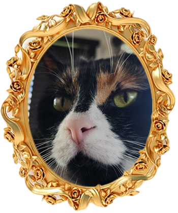
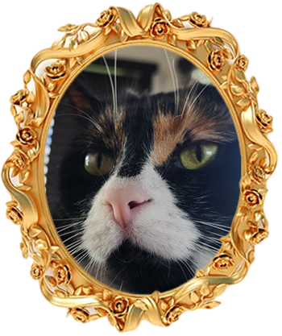

Bienvenu!
JE SUIS PATRICIA!
Passionnée par le cinéma et le design graphique, j’aime explorer la
façon dont l’image et la création visuelle peuvent toucher profondément
les gens et leurs émotions. Me plonger dans une histoire, oublier qu’il
s’agit d’acteurs et m’investir pleinement dans leur univers visuel et
narratif est ce qui m’inspire le plus.
Je suis aussi une grande adepte de la gestion et de l’organisation, que
je considère comme essentielles à la réussite d’un projet, autant pour
son déroulement que pour son résultat final. C’est cette passion qui m’a
menée vers le multimédia, un domaine où je peux allier créativité,
structure et innovation.